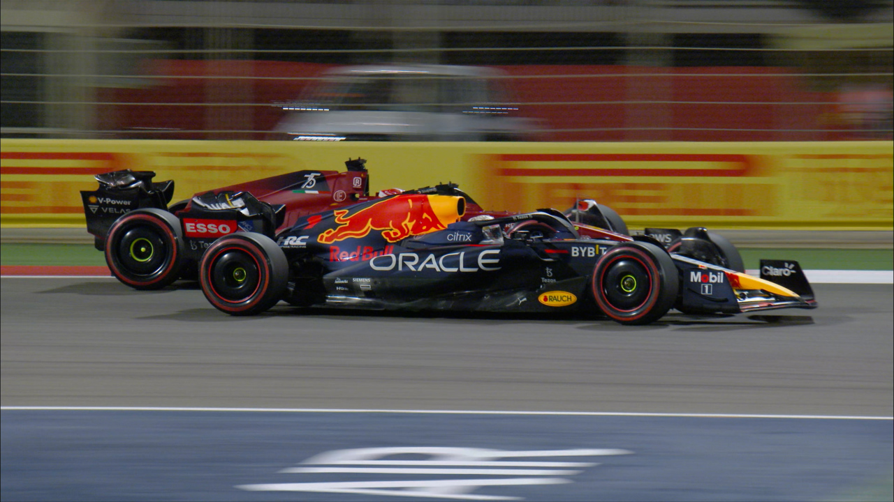
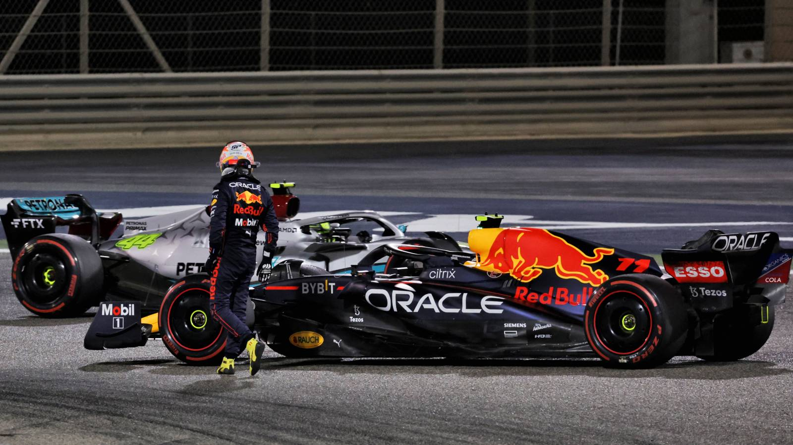
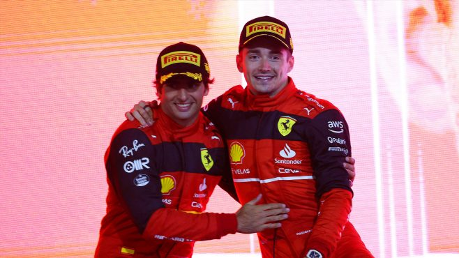
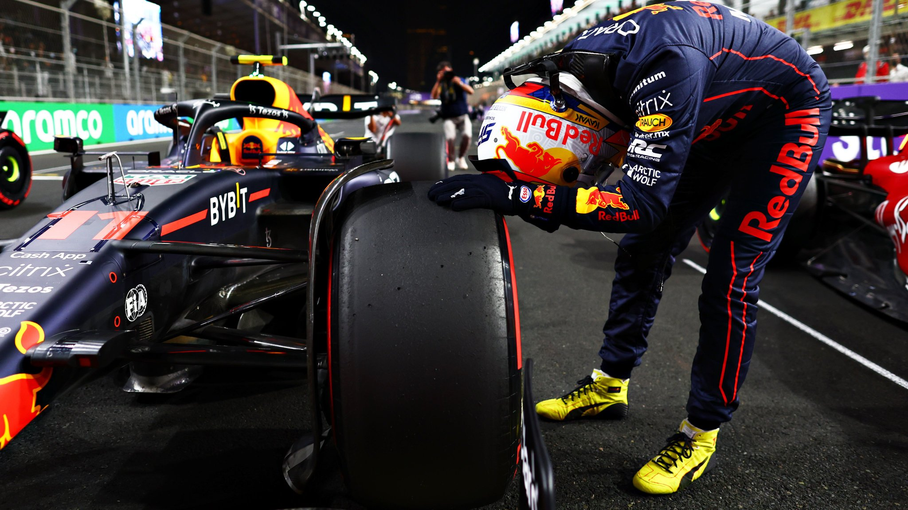
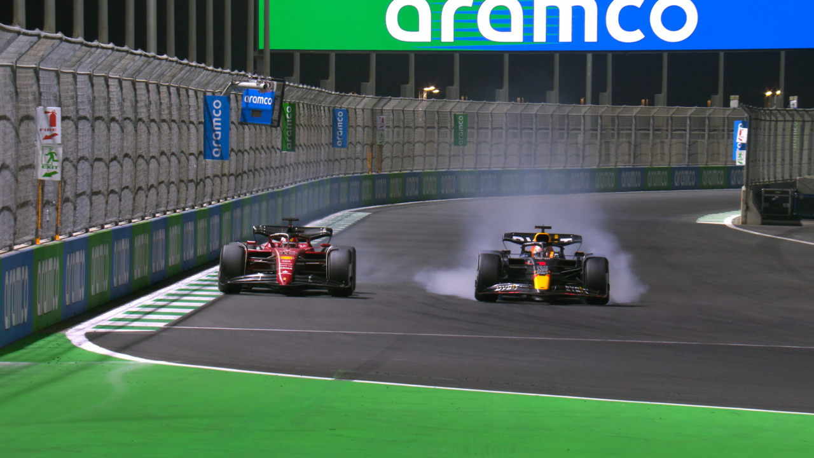
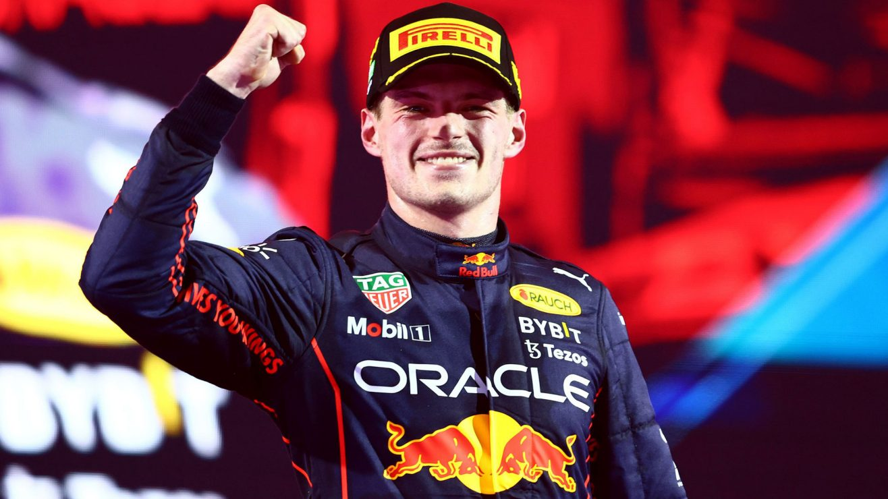

BAHRAIN GRAND PRIX
It was held on the March 18-20 weekend. Here the pre-season testing predictions materialized, but not quite. It was true that Ferrari was the quickest, but Red Bull was following close behind, in fact they seemed extremely competitive throughout the race. Ferrari's Charles Leclerc who started on pole position was challenged many times for the lead by reigning world champion Red Bull's Max Verstappen, unfortunately disaster would claim both Red Bull drivers with mere few laps to the finish line.
An issue with the fuel pumping system saw both cars retire, Verstappen had the chance to bring his car limping back to the pits, but his teammate Sergio Perez was not as lucky, his engine gave out making him lose control and spin while battling Mercedes' 7-time world champion Lewis Hamilton for the final podium place. This gave Ferrari its first 1-2 finish since Singapore 2019.
SAUDI ARABIAN GRAND PRIX
It was held on the March 25-27 weekend. Sergio Perez claimed a first career pole in Saudi Arabia at his 215th attempt, the longest wait in F1 history. The Mexican took top spot from Ferrari's Charles Leclerc, with the pair split by just two-hundredths of a second. The session had paused for an hour during Q2 after a violent high-speed crash for Haas' Mick Schumacher, who was transported to the medical center, where no injuries were revealed and later to hospital for precautionary checks. Q1 saw Lewis Hamilton make a surprising exit in 16th, his first Q1 exit since Brazil 2017.
On race day Perez pulled away from Leclerc in the start and led for 16 laps, when Ferrari called Leclerc in for his pit stop Red Bull was pushed to cover it boxing their leading car, unfortunately as Perez was leaving the pits Williams' Nicholas Latifi crashed into the barriers triggering a safety car. This proved detrimental for the Mexican's race as he had to settle for a fourth position while Sainz, Verstappen and Leclerc capitalized from the SC. Leclerc and Verstappen engaged in a thrilling battle for the lead that lasted until they saw the checkered flag, both demonstrating excellent car control and race craft as they were finding ways to get DRS from each other. Ultimately Verstappen and Red Bull's straight line speed advantage proved to be superior giving them the victory for only half a second, the closest race finish since Italy 2020.
(Note: The Safety Car (SC) and the Virtual Safety Car (VSC) are deployed when any hazardous object obstructs the track, all cars are required to lower their speed and maintain it bellow the pace that is being set by the Safety Car, this is better known as Delta Time. Those who don't adhere to this Delta can face disqualification from the session.) (Note: The Drag Reduction System (DRS) is a mechanism located in the car's rear wing that opens it. This gives the vehicle a boost of aerodynamic efficiency or in other words top speed, this system was implemented to encourage overtakes and can only be used in the DRS zones and when the car behind is within one second of the car in front. DRS zones are specifically chosen for each track, normally they are placed on straights, since having DRS open while cornering can make the car unstable and lead to accidents.)